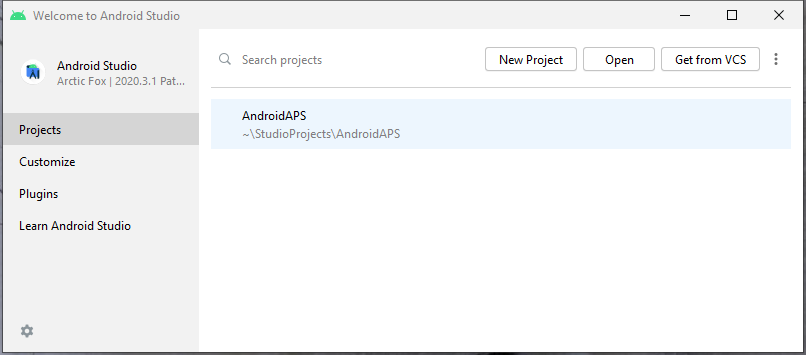
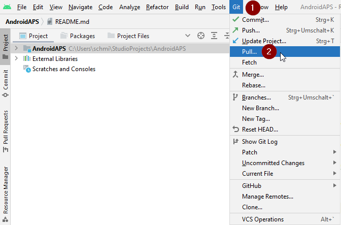
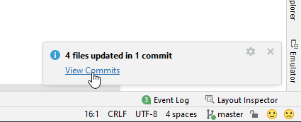
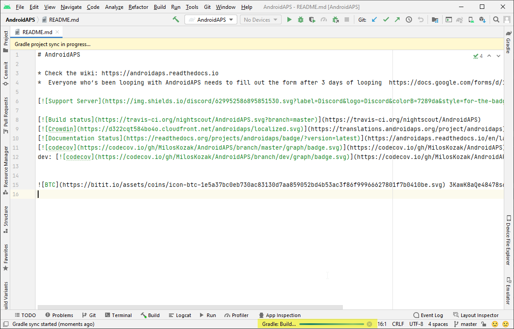

Update to a new version or branch
Build yourself instead of download
AAPS is not available to download, due to regulations concerning medical devices. It is legal to build the app for your own use, but you must not give a copy to others! See FAQ page for details.
Important notes
- Please update to the new version of AAPS as soon as possible after a new release is available.
- When a new release is available, in the AAPS app itself, you will receive an information banner about the new version.
- The new version will also be announced on Facebook at the time of release.
- Following the release, please read the Release Notes in detail, and clarify any queries with the community on Facebook or Discord, before proceeding with the update.
- For AAPS versions 2.7 and newer, the location for the new files is at https://github.com/nightscout/AndroidAPS.
- You need to use the latest version of Android Studio, Hedgehog, 2023.1.1.
- If building the AAPS app using a Windows platform, you will need to use a Windows 64-bit system since 32-bit systems are not supported.
Overview for updating to a new version of AAPS
- Export your settings from the existing AAPS version on your phone. You might not need it, but better be safe than sorry.
- Update local copy of the AAPS sourcecode (Git->Fetch and Git -> Pull)
- Build signed APK
- Transfer the built apk to your phone and install it
- Check the version in AAPS
- Depending on your BG source make sure to identify receiver in xDrip or use the 'Build your own Dexcom App'.
In case you experience problems, see separate page for troubleshooting Android Studio.
1. Export your settings
See the Export & import settings page if you don't remember how to do this.
(Update-to-new-version-update-your-local-copy)=
2. Update your local copy
As of version 2.7 repository location changed to https://github.com/nightscout/AndroidAPS. If you are not familiar with git the easiest way for update is remove directory with AAPS on your disk and follow the instructions to do a New clone.
If you have already changed the URL or update from version 2.8.x, follow these steps:
- Open your existing AAPS project with Android Studio. You might need to select your project. (Double) click on the AAPS project.

- In the menu bar of Android Studio, select Git -> Fetch

- You will see a message in the lower right corner that Fetch was successful.

- In the menu bar, now select Git -> Pull

- Leave all options as they are (origin/master) and select Pull

- Wait while download is in progress, you will see this as info in the bottom bar. When it's done, you will see a success message. Note: The files that were updated may vary! This is not an indication

- Gradle Sync will be running a couple of seconds to download some dependencies. Wait until it is finished.

(Update-to-new-version-build-the-signed-apk)=
3. Build the Signed APK
Your sourcecode is now the current released version. It's time to build the signed apk from it as described in the build signed apk section.
4. Transfer the apk
You need to transfer the apk to your phone so you can install it.
See the instructions for Transfer APK to smartphone
5. Install apk
On your phone you have to allow installation from unknown sources. Manuals how to do this can be found on the internet (i.e. here or here). Note: If you completed the build with the same existing key store in Android Studio, then you do not need to remove the existing app on your phone. When you install the apk, follow the prompts to install updates. For other scenarios such as establishing a new key store in Android Studio for your signed apk, you will need to delete the old app before installing the apk.
(Update-to-new-version-check-aaps-version-on-phone)=
6. Check AAPS version on phone
After you installed the new apk, you can check the AAPS version on your phone by clicking the three dots menu on the top right and then About. You should see the current version.

Troubleshooting
If anything goes wrong, don't panic.
Take a breath!
Then see the separate page troubleshooting Android Studio if your problem is already documented!